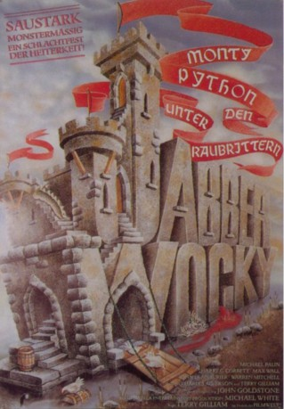
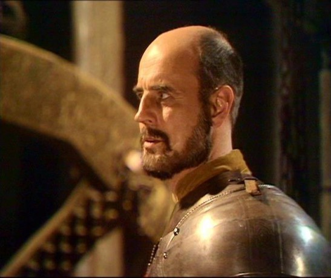
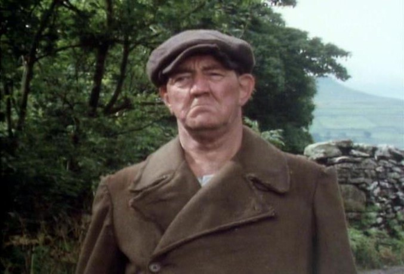

#5747 Jabberwocky
 
 IMDB-Wertung: 6.2 / 10
IMDB-Wertung: 6.2 / 10  Tomatometer: 50
Tomatometer: 50  Metascore: 0
Metascore: 0 
Der Film beschreibt die Geschichte von Dennis Cooper (Küfer mit Gesellenabschluss). Er lebt mit seinem Vater in einem kleinen Dorf und träumt davon, die Welt durch seine Ideen zu verbessern. Als sein Vater stirbt, zieht es Dennis in die Stadt, weg von seiner Liebsten hin zu Ansehen und Verdienst.Dabei gerät er in so manches Abenteuer. Auch gegen den gefährlichen Jabberwocky (ein drachenartiges Ungeheuer), der die Wälder um die Stadt unsicher macht. Als er diesen schließlich besiegt und damit die mittelalterliche Welt wieder ein bisschen sicherer macht, wird er endlich von seiner Liebsten respektiert, gewinnt aber gleichzeitig das Herz der Prinzessin des Reiches, die in romantische Schwelgerei verfallen ihr Dasein im noch stehenden Turm der Burg fristete.
Jahr: 1977
Dauer: 100 Minuten
FSK: 16
Land: England Studio: Columbia TriStar Home EntertainmentTonspuren:
Untertitel:
Auflösung: SD (576x320) Größe: 700 MB
Genre: Komödie, Abenteuer, Fantasy
Regisseur:  Terry Gilliam
Terry Gilliam
Drehbuch: John Steinbeck
Soundtrack:
Darsteller:
 Michael Palin als Dennis Cooper
Michael Palin als Dennis Cooper John Le Mesurier als The Chamberlain
John Le Mesurier als The Chamberlain- Warren Mitchell als Mr. Fishfinger
- Rodney Bewes als The Other Squire
 Bernard Bresslaw als The Landlord
Bernard Bresslaw als The Landlord- Deborah Fallender als The Princess
 Terry Gilliam als Man with Rock
Terry Gilliam als Man with Rock Terry Jones als Poacher
Terry Jones als Poacher- Frank Williams als 2nd Merchant
- Simon Williams als The Prince
 Annette Badland als Griselda Fishfinger
Annette Badland als Griselda Fishfinger Kenneth Colley als 1st Fanatic
Kenneth Colley als 1st Fanatic- Graham Crowden als Fanatics' Leader
- Paul Curran als Mr. Cooper Senior
 Brian Glover als Armourer
Brian Glover als Armourer- Tony Aitken als Flagellant
- Derrick O'Connor als Flying Hogfish Peasant
- Gorden Kaye als Sister Jessica
 David Prowse als Red Herring and Black Knights
David Prowse als Red Herring and Black Knights Gordon Rollings als King's Taster
Gordon Rollings als King's Taster- Reg Lye als Hawker , uncredited
- Roger Pratt als Man Living in Barrel , uncredited
- Anita Sharp-Bolster als Old Crone / Woman with Stone , uncredited
- Harry H. Corbett als The Squire
- Max Wall als King Bruno the Questionable
- John Bird als 1st Herald
-  Anthony Carrick als 3rd Merchant
- Peter Cellier als 1st Merchant
- Derek Francis als Bishop
- Neil Innes als 2nd Herald
-  Bryan Pringle als Guard at Gate
- Glenn Williams als 2nd Guard at Gate
- Brenda Cowling als Mrs. Fishfinger
- Alexandra Dane als Landlord's Wife
- Jerold Wells als Wat Dabney
- Peter Casillas als 3rd Square
- Derek Deadman als Apprentice Armourer
- Janine Duvitski als Fanatic
- Roy Evans als Ratman
- Bill Gavin als Old Man with Petition
- Harold Goodwin als 1st Peasant
- John Gorman als 2nd Peasant
- Julian Hough als 4th Peasant / Fanatic
- Des Jones als Door Opener
- Christopher Logue als Spaghetti-eating Fanatic
- Dan Muir als Crescent and Red Dog Knights
- Sheridan Earl Russell als Kevin Fishfinger
- Peter Salmon als The Monster
- Hilary Sesta als Scrubber
 John Sharp als Sergeant at Gate
John Sharp als Sergeant at Gate
Datei: X:\Person\Monty Python\Jabberwocky (1977, FSK16, 576x320).avi seit 17.03.2017
Festplatte: HD Collection-7+mehr(A-Z)+Person
 Es gibt insgesamt 11 Filme in der Gruppe 'Person\Monty Python'
Es gibt insgesamt 11 Filme in der Gruppe 'Person\Monty Python'